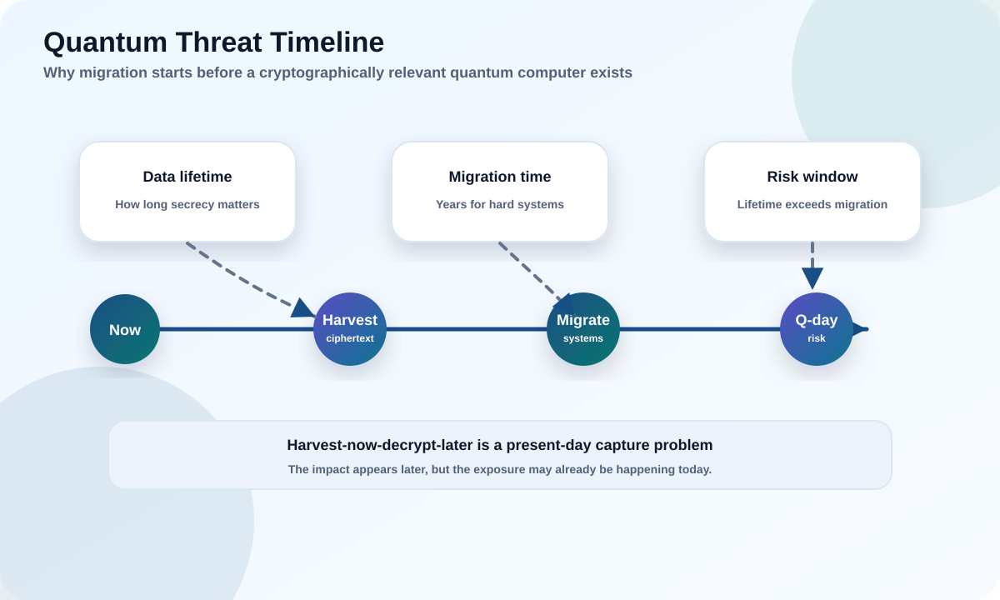

The risk is not "encryption dies overnight." It is a specific, uneven threat with a timing twist that makes waiting dangerous. This module makes the logic concrete — and lets you compute the urgency yourself.
Explain why Shor's algorithm changes the public-key threat model.
Explain why symmetric encryption and hashes are affected differently.
Prioritize systems by data lifetime, exposure, and migration time.

Try it: is this data at risk? A harvest-now-decrypt-later calculator
Drag the sliders for one of your systems. The tool compares how long your data must stay secret against when a capable quantum computer might arrive.
Risk inputs
These are your assumptions
Nobody knows the real "Q-day." The point of the tool is the relationship: if data lifetime exceeds time-to-quantum, captured traffic is exposed while it still matters — and migration time eats into your runway.
1
What a "cryptographically relevant quantum computer" means
Not any quantum computer — a big, reliable, error-corrected one able to break deployed public-key crypto in practical time.
The exact arrival date (often called Q-day) is genuinely uncertain, and credible estimates span a wide range. Security planning does not require a precise date. It requires reasoning under uncertainty: if the consequence is severe and the fix takes years, waiting for certainty is not responsible.
Reframe the question
Don't ask "Is Q-day tomorrow?" Ask "Which of my data and trust systems would still matter by the time my migration is finished?" That question you can answer today.
2
Shor's algorithm versus Grover's algorithm
One algorithm is a demolition charge for public-key crypto; the other is a slow leak you can patch with bigger keys.
Shor → public-key collapses
Breaks RSA, finite-field Diffie-Hellman, ECDH, ECDSA, and EdDSA by efficiently solving factoring and discrete logs. These do not survive a CRQC. They must be replaced or hybridized.
Grover → margins shrink
Gives a square-root speedup for brute-force search. Symmetric keys and hashes lose roughly half their effective bits. AES-256 and SHA-384/512-class outputs keep strong margins.
Common pitfall
Telling stakeholders "quantum breaks all encryption equally." It does not, and that message creates panic and bad priorities. The precise message: replace classical public-key; review symmetric/hash sizes.
3
Harvest now, decrypt later
The attacker does not need a quantum computer today to hurt you with one tomorrow.
Harvest now, decrypt later means an adversary records your encrypted traffic or copies encrypted files now and simply waits. When a CRQC arrives, they decrypt the archive. The theft happened today; the damage lands in the future — but only if the data is still sensitive then.
TodayAttacker copies your encrypted traffic.
→
WaitsStores it cheaply for years.
→
Q-dayUses Shor to recover the session keys.
→
ImpactDecrypts anything still sensitive.
Concrete example
Encrypted traffic carrying merger documents or 25-year medical records is captured today. If the key exchange is broken in 12 years and those documents still matter, the breach is real — even though nothing looked wrong at capture time.
Common pitfall
Ranking risk only by "is it internet-facing?" Long-lived internal secrets can outrank a public marketing site.
4
Practical risk triage
A first-pass score, not a final cryptographic review, tells you where to start.
Factor
Question
Raises priority when...
Data lifetime
How long must it stay secret / trusted?
Years to decades.
Exposure
Can an attacker capture it?
Crosses untrusted networks or third parties.
Public-key dependence
Does it rely on RSA/ECC for key exchange or signatures?
Yes, and hard to change.
Business impact
What if it is exposed or forged?
Regulated, safety-critical, or reputational.
Migration difficulty
How long to fix?
Vendor-controlled, embedded, or long-lived.
High-priority areas usually include external TLS, VPN, SSH, identity systems, code and firmware signing, certificate authorities, HSM/KMS dependencies, long-lived encrypted archives, and slow-to-update vendor products. Low-priority does not mean "ignore" — it means inventory, monitor, and migrate on the normal refresh cycle.
Takeaway
Prioritization prevents both panic and neglect. Some systems need urgent architecture review; others just need to be tracked.
Hands-on labs
Decide first, then reveal.
Lab 1 · VPN vs marketing site
You can only migrate one system this quarter: the corporate VPN carrying internal traffic, or the public marketing website.
Which goes first, and why?
Recommended answer The VPN. It carries long-lived, sensitive internal data over untrusted networks and depends on public-key key exchange — a textbook harvest-now-decrypt-later target. The marketing site's content is public and short-lived.
Lab 2 · Old signed firmware
Field devices accept firmware signed with a classical signature and will run for 10+ years.
Why can signatures be urgent even with no confidential data involved?
Recommended answer If the signature algorithm is broken during the device's life, an attacker could forge updates and take over the fleet. Long-lived trust roots and verifiers must move early even when confidentiality is irrelevant.
Lab 3 · Short-lived news page
A public news page serves content that is irrelevant within a day.
First migration wave, or track it?
Recommended answer Track it. Nothing is secret and nothing is long-lived, so harvest-now-decrypt-later does not apply. Migrate it on the normal refresh cycle behind higher-risk systems.
Knowledge check
Score 70%+ to mark this module complete.
Score: 0/0
Primary sources
Educational; verify against primary guidance before decisions.